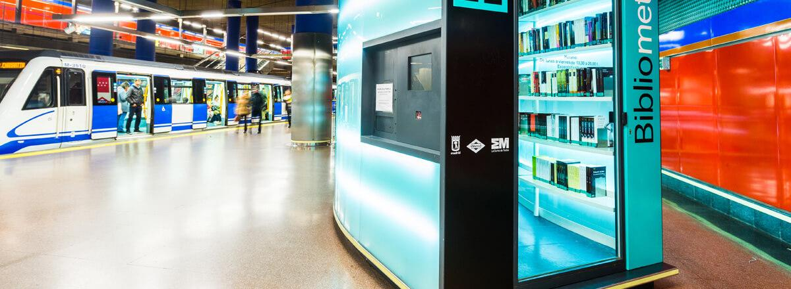
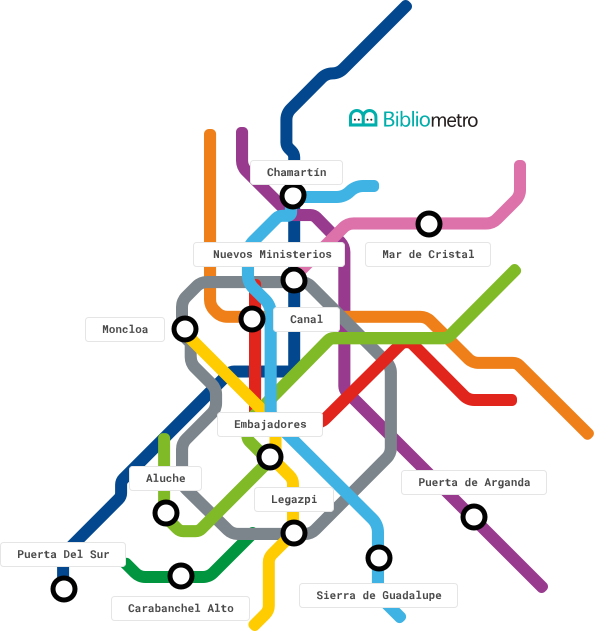

Bibliometro es un sistema de préstamo gratuito de libros, ubicado en 12 estaciones de la red de Metro de Madrid. Para obtener el Carnet Único de Bibliotecas Públicas de la Comunidad de Madrid y poder hacer uso de este servicio, basta con presentar el DNI en cualquiera de los módulos de Bibliometro. El carnet se expide en el momento y se puede utilizar también en las bibliotecas de la Comunidad de Madrid y del Ayuntamiento que se encuentran dentro del municipio de Madrid, así como en más de 90 bibliotecas de la Comunidad.
Las nuevas plataformas de lectura social constituyen una alternativa a los tradicionales clubes de lectura presenciales que se desarrollan en las bibliotecas. Ofrecen espacios sin imperativos físicos, moderados por personas especializadas, para leer en compañía, comunicarse a través de chats o líneas de debate y acceder a material complementario a las lecturas en cualquier formato.
Acomódate en cualquiera de nuestras salas para disfrutar más y mejor de los libros, interpretar y profundizar en su lectura, conocer a sus autores a través de sus obras e incluso conversar con ellos en los encuentros virtuales.
Puedes conseguir un bibliometro en las estaciones de: Nuevos Ministerios, Puerta del Sur, Embajadores, Puerta de Arganda, Canal, Mar de Cristal, Aluche, Sierra de Guadalupe, Moncloa, Carabanchel Alto, Legazpi, Chamartín
Personalmente en las bibliotecas. Para los menores de 18 años será necesario presentar el impreso de autorización firmado por el padre, madre o tutor y la fotocopia del DNI o documento similar del autorizante.
El DNI u otro documento que acredite legalmente la identidad personal. Para los menores de edad es necesaria la autorización del padre, la madre o tutor legal Se deberá presentar siempre el documento original y vigente.
Sí, el Préstamo Intercentros permite a los usuarios llevar en préstamo, desde cualquier biblioteca participante de la Red de la Comunidad de Madrid, libros procedentes de otros centros integrados.
Todas las bibliotecas cuentan con Internet y wifi.
Tres días a partir del día de activación.
Sí, a través del Área de usuario y personalmente en la biblioteca rellenando el impreso de solicitud o desiderata. También se puede solicitar en el préstamo interbibliotecario.
Cada usuario puede llevar en préstamo, no renovable: 6 libros durante un máximo de 30 días, 6 documentos audiovisuales, sonoros o electrónicos durante un máximo de 7 días, 1 lector de libros electrónicos durante 1 mes, según disponibilidad (Biblioteca Luis Rosales) 3 revistas durante un máximo de 7 días.